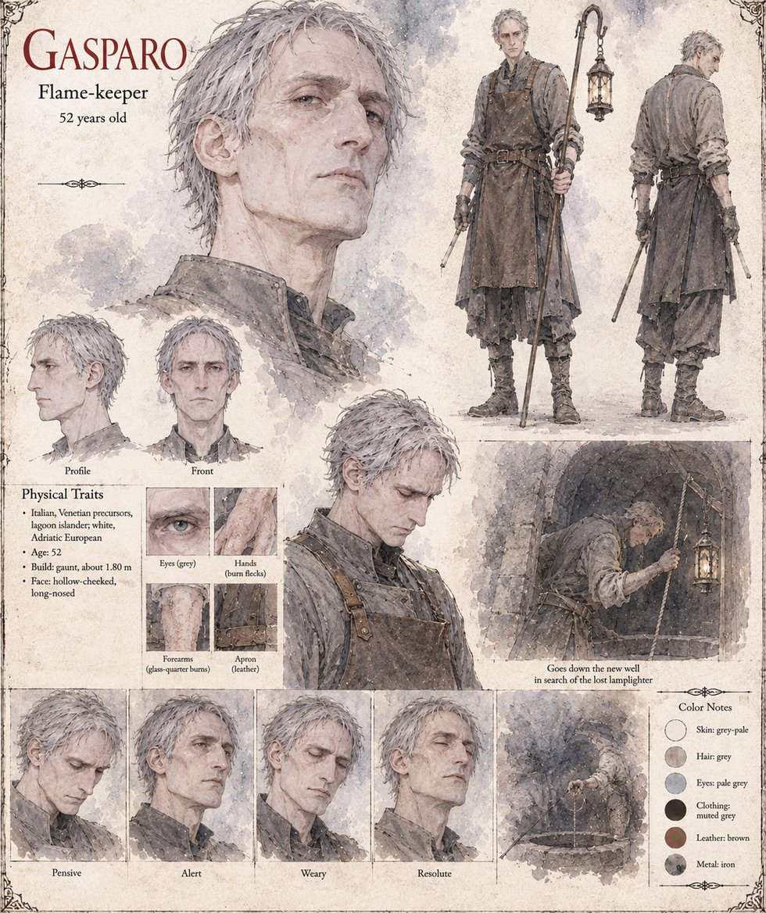

Gasparo
Flame-keeper of Focolare · one of the four river keepers · thirty years on the same eleven lamps · 52 on the sheet
The older keepers have learned not to look at the flame directly, and Gasparo is a gaunt silent glass-quarter man who had lit the same eleven lamps for thirty years and could not have said what any of them looked like. On the river he is one of the four lamplighters who tend the Hearth-Lamp in its triple glass in shifts, forbidden by rule to sleep at the same time, and who sing a round of eleven verses at the second watch in four incompatible keys. When the Ring is lit he follows Nico, who runs the first stretch, in relay with Lucietta and Tomà, each lighting the lamp where the last has stopped.
On the dawn that the Far Lamp is found burning unattended in a pool of its own spilled oil and the boy not found at all, the village searches the reeds, the drovers’ track and the barley-stubble, and Gasparo goes down into the new well on a rope with a lantern and comes up white and silent. When Nico runs for the Line, Gasparo and Tomà, standing at the back with the other lamplighters, do not move; it will be said of them that they were too slow, and said by themselves, privately, for the rest of their lives, that they were exactly as fast as the Order had taught them to be. The Ring cannot be permitted a dark post, and the lamplighters of the northern rota tend the Far Lamp in turn. Gasparo is one of those whose replays fill the Antiphonary’s sixth through ninth entries: a man saying, in a tone of mild surprise, that he had not known they looked like that.
The manuscript gives him only that he is older than the youngest keeper, gaunt and silent, from the glass-quarter, with thirty years on his lamps; it gives no age, height, hair or eye colour. The sheet’s age of 52, build of about 1.80 m, hollow-cheeked long-nosed face, grey eyes, grey hair, burn-flecked hands and forearms, leather apron and gloves are its own, as are its panels Pensive, Alert, Weary and Resolute; the manuscript gives the burned forearms to Lucietta, not to him. Its scene Goes down the new well in search of the lost lamplighter follows the manuscript, which calls the lost one the boy, Ilario, a probationer rather than a lamplighter. Its final unlabeled panel, a figure paying out a rope at a well-ring, is not in the manuscript.
“a gaunt silent glass-quarter man who had lit the same eleven lamps for thirty years and could not have said what any of them looked like”